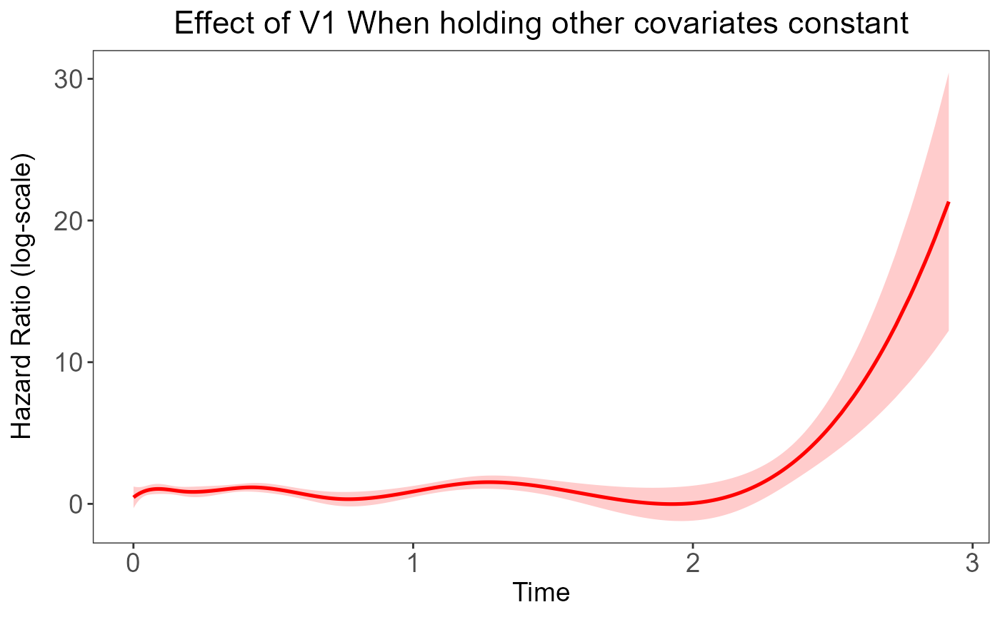

1. Introduction:
Coxtp is an R package for fitting penalized Newton’s
method for the time-varying effects model using mAIC, TIC, GIC as
information criteria, in particular we span the parameter using basis
functions. Utilities for carrying out post-fitting visualization,
summarize, and inference are also provided.
3. Dataset preperation:
For the purpose of demonstration, we will use the simulated dataset “sim_data” in the our package.
sim_data=sim_dataLet’s check the data first:
head(sim_data)
#> V1 V2 event time
#> [1,] 0 0 1 0.0003028248
#> [2,] 0 0 1 0.0004273569
#> [3,] 0 0 0 0.0008948164
#> [4,] 0 0 1 0.0008981023
#> [5,] 0 0 0 0.0009103830
#> [6,] 0 0 1 0.0010759157Then, let’s extract the time and event as vector, and get the remaining information in the dataset as matrix
4. Model fitting
4.1 Newton Method without penalization:
4.1.1 Simple fitting:
Let’s fit the model. Here, the default method is Newton Method
without penalization, with smooth-spline. Term
lambda_spline refers to the smoothing parameter
lambda(Detail could be found under both “Model parameter(Add link)”
section or our paper here(add link). Default value is 0, which refers to
no penalization.
fit <- coxtp(event = event, z = data, time = time)To get the estimated time-varying effect of a specific coefficient, we could use the following plot function in our package:
coxtp.plot(fit,coef="V1")
The plot shows the result of the time-varying effect of Variable “V1”.